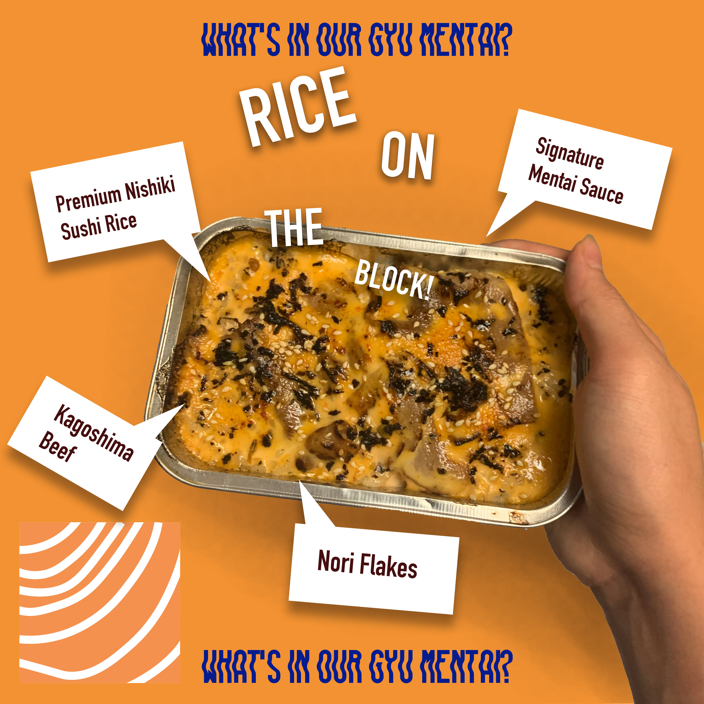
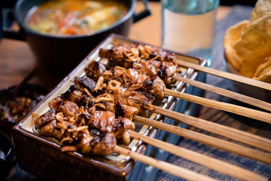
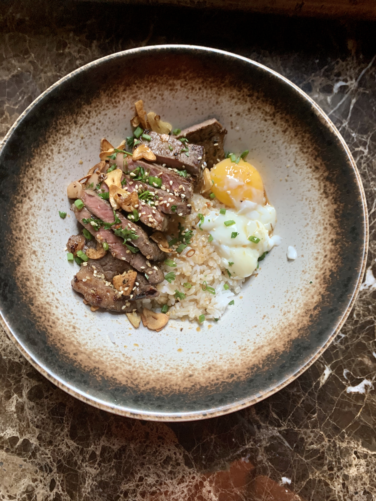

From a restaurant serving burgers and pizzas made with local noodles to a social media star giving street food a touch of haute cuisine, a new wave of innovative chefs are putting a modern twist on Indonesia’s traditional
fare.
New eateries have sprung up rapidly in recent years in the capital Jakarta offering a wide array of foreign foods to cater to a growing consumer class which has emerged after a long economic boom.
But rather than focus entirely on cuisine from overseas, some chefs decided to fuse the new influences with age-old Indonesian foods.
Rendang Padang original Minang is one of the original dishes of the archipelago that has been famous in foreign countries. Even based on the results of pooling from one of the news websites from England, rendang Minang
native Padang was once chosen as the most delicious food in the world.
Now if most of the rendang that you meet now has gone through a lot of modifications, then the question is whether you want to try the original Padang Minang rendang ?, We will give you a recipe for Minang Padang original rendang and then you
can try to mix it.
Ingredients
1/2 kg Beef
2 coconuts (one each for the types of coconut milk)
Spices
7 shallots
5 garlic clove
3 cm ginger
2 cm turmeric
3 Kaffir Lime Leaf
Galangal (a little bit)
1 Lemongrass
15 thai chilli pepper
4 tbsp chilli powder
Salt (to taste)
1/2 tsp nutmeg
Method
Wash the blood off the meat
Prepare spices to be grinded with mortar and pestle.
Grind turmeric, shallots, garlic, ginger, galangal and ½ tbsp of salt
Add chilli padi.
Add the meat into the spice mix
Prepare coconut milk and put in the lime leaf and lemongrass.
Heat the coconut milk to a simmer and add the meat.
Add nutmeg
Cook on low for 4 hours in a slow cooker.
You’ll know when it’s cooked, when there is an oil separation betw
An Indonesian "Mentai" Rice: Rice On The Block
The beginning of the creation of mentai sauce itself was inspired by Western food styles where mentaiko was combined with mayonnaise to produce a thick texture. The character tastes quite creamy, but there is a sense of umami
which is none
other than the egg of the kod aka mentaiko itself.
If explored further, the taste of original Japanese mentai sauce feels more bland because of minimal spices and only uses mayonnaise. Unlike in Indonesia, many mentai sauce sellers who modify the flavor with a variety of spices so that the
taste of mentai sauce is more easily accepted by the tongue of our society.

The funny thing is, there are also many mentai sauce sellers who use tobiko as the main ingredient because cod farming is quite difficult to find in Indonesia. It tastes a little different, but it's still tasty. Rice on the
Block, is an
online food delivery service where we sell Indonesian mentai rice. It was established in the middle of the pandemic out of boredom, and is unexpectedly quite high in demand. The ingredients we use are of good quality, like the fresh Norwegian
Salmon Trout to the traditional Nishiki sushi rice. If interested, you can follow us on Instagram here
Tale of Sate Ayam

Sate, juicy slices of marinated meat on thin bamboo skewers grilled to perfection on a charcoal open fire and accompanied by a delectably savoury sauce - it is no wonder that this dish is one of President Barack Obama’s
childhood
favourites.Sate (or more commonly known as Satay) is undoubtedly one of Indonesia’s most famous dishes. It is also one of those dishes that most South East Asian countries claim as their own. However historically, it can be traced back to
Java as the place where the Indian kebab, imported by Muslim traders, first took on a distinctly more eastern flavour.
In the 19th century, many Tamil and Gujarat Muslim traders came to Indonesia. The Indian traders brought processed grilled goat meat called kebab. At first, the Indonesian people cooked meat by boiling it. But after getting to
know kebab,
Indonesian people like to eat beef or mutton by burning it. The word satay is also thought to originate from the Tamil language, which is catai which means meat. Satay is also growing throughout Indonesia. Almost every region in Indonesia has
a unique satay menu. Satay also spread to the Straits of Malacca, Malaysia, Singapore and Thailand. Apparently in that century there were migrants from Java and Madura who sold satay there. At the end of the 19th century, satay spread to
South Africa. There, satay is called sosatie.
Burger + Sushi = ?
Along with the times, innovations in the culinary world are increasingly diverse. Starting from food that is made more modern and up to date, to food that is created from a combination of two types of food that is commonly
called a hybrid
food. Located in Kebayoran Baru, South Jakarta, Burgushi Cafe offers a variety of unique Western and Japanese-style dishes. Not an ordinary dish, because the cafe serves a cross between American burgers and Japanese sushi transformed into
Burgushi or sushi burgers.
There are two choices of Burgushi that you can choose, namely double beef Burgushi and mentai salmon with a richer Japanese flavor. Both types of Burgushi are served warm with a sheet of nori that makes the appearance of
burgers
at a glance
similar to the onigiri from Sakura.
Not only is the appearance unique, the taste also has a rich blend of flavors. For double beef Burgushi, the meat filling in the burger is very abundant and has a juicy texture.
Homemade Truffle Gyudon

Gyudon is basically a dish of thinly sliced fatty beef, cooked in a slightly sweet mixture of mirin and soy sauce and served over rice. Sake is also sometimes added for extra flavor. At the place I went to in Beijing, the
would serve it
piping hot with a raw egg yolk on top. With thinly sliced beef and sweet onions over a bowl of steaming rice, this Gyudon (牛丼), or “beef bowl” is a mouthwatering Japanese classic that comes together in minutes. The secret to tender
flavorful beef is to gently simmer the meat in a broth made from dashi, white wine, and sake. The broth turns into a tasty sauce that percolates into the rice, flavoring each grain with loads of beefy goodness.
Although these days Japan is famous for their Wagyu beef, using cattle for food is a relatively new concept that dates back to the latter half of the 19th century, when Japan opened its doors to foreign trade. One of the first areas to
welcome foreigners was Tokyo, which is why it’s no big surprise that Gyudon got its start there.
It would warm up as you mixed it in with the hot beef and rice, imparting a richness to the dish that couldn’t be beat––not even by the beckoning call of hand-pulled noodles or Yunnan hot pot. Needless to say, I frequented that particular
spot at least once every couple weeks.
Now that I’m back in the States, where elaborate weekday lunches aren’t quite as easy on my wallet as they were in Jakarta, I’ve been seeking to recreate some of my old favorites, and this Gyudon recipe is definitely one of them!
My Gyudon however, uses Wagyu Steak instead of thinly sliced beef, and also Onsen Egg instead of raw egg. The combination is a heavenly match that everyone should try.
Our Story
IndoEats is a magazine for homecooks created by Cathelyna Suherman in 2020. Here, you’ll see recipes from around the world, with an emphasis on modern Indonesian cuisine. Living in Indonesia for 19 years, my interest in my
cultural cuisine
has
been a journey. I began to explore my food journey the first time when I was 15, and learnt that I enjoyed cooking very much, especially exploring my culture.